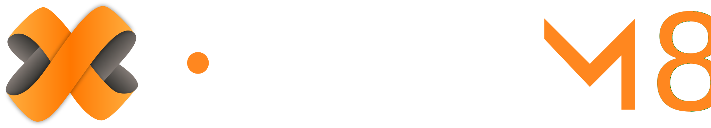
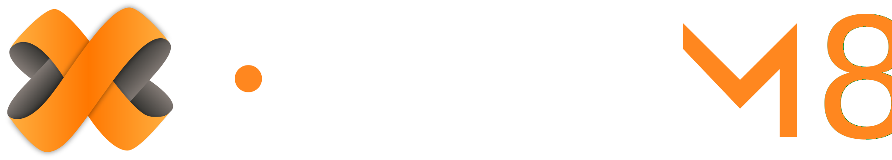

Streamline your molecular discovery with our open-source Virtual Screening workflow utilizing consensus docking. Join our community - contribute to the evolution of docking and scoring protocols.
Automatic receptor protonation
Options for ligand protonation and conformer generation
Automatic decoy generation for performance optimization
5 docking algorithms included
Over 30 pose selection methods
16 scoring functions included
7 consensus strategies available
Thorough benchmarking and validation
 
